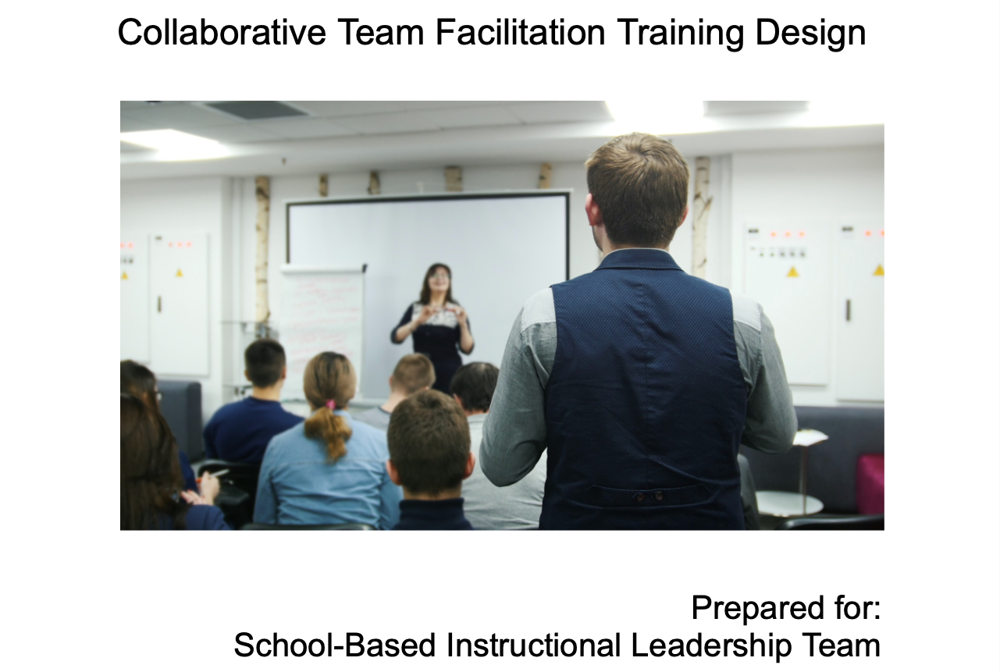

Use methods of inquiry and data
Use methods of inquiry to make data-driven decisions that inform practice in the discipline.
Featured Artifact

Collaborative Team Facilitation Training Design
This instructional design project focused on creating a job-embedded professional learning experience for secondary school Collaborative Team (CT) facilitators. The goal of the training was to address inconsistent facilitation practices and improve the effectiveness of CT meetings through structured agendas, data-analysis protocols, facilitation language, and actionable next steps. I designed the project around authentic school-based contexts by using real CT materials, realistic meeting constraints, and practical facilitation tools that participants could immediately apply in their own departments. The design process included learner analysis, alignment of performance and learning contexts, theoretical justification, implementation planning, and evaluation methods grounded in real instructional practice.
This artifact aligns with Program Objective 4 because it demonstrates the use of methods of inquiry and data-driven decision-making to inform professional practice. Throughout the project, I analyzed facilitation challenges within Collaborative Teams, identified performance gaps, and designed instructional solutions based on observed needs and contextual constraints. The training incorporated evaluation methods grounded in the Kirkpatrick Model, including pre- and post-observations, participant feedback, and analysis of meeting artifacts to measure changes in facilitation behaviors and instructional outcomes. By connecting learner needs, authentic performance tasks, and measurable evaluation strategies, this project demonstrates how instructional design can use inquiry and evidence to improve collaboration, instructional decision-making, and organizational practice.
Download PDF